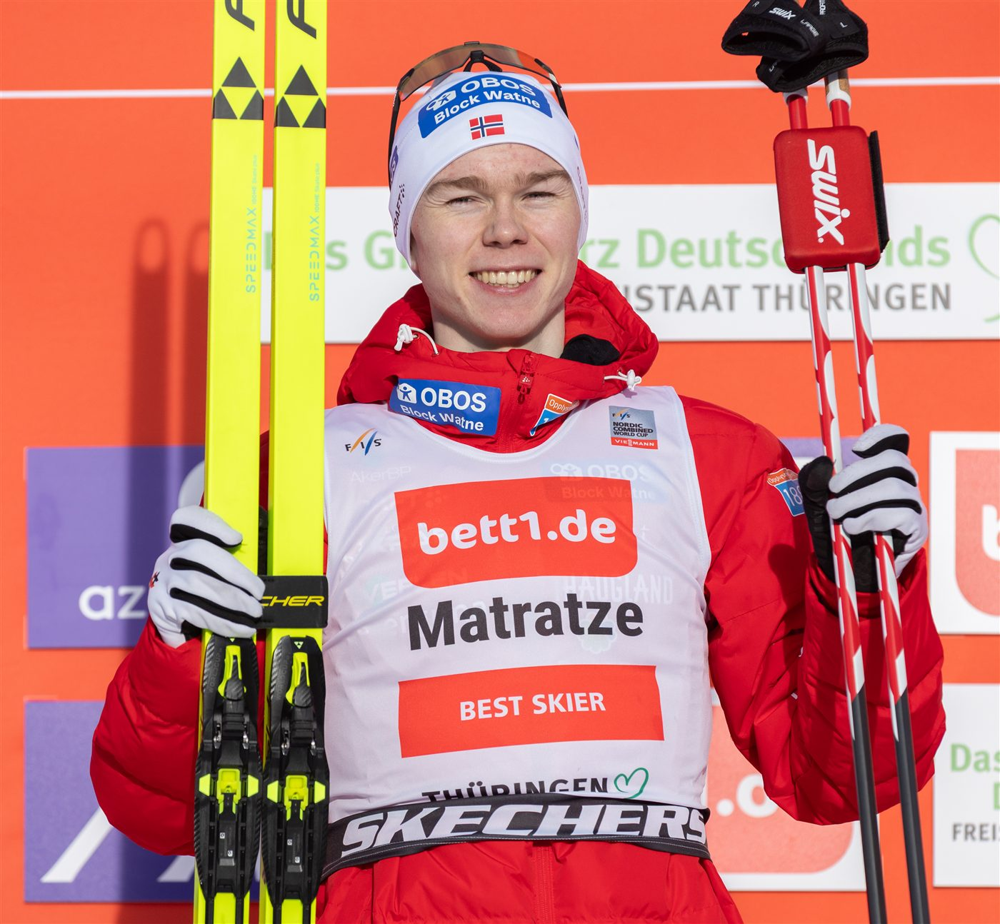
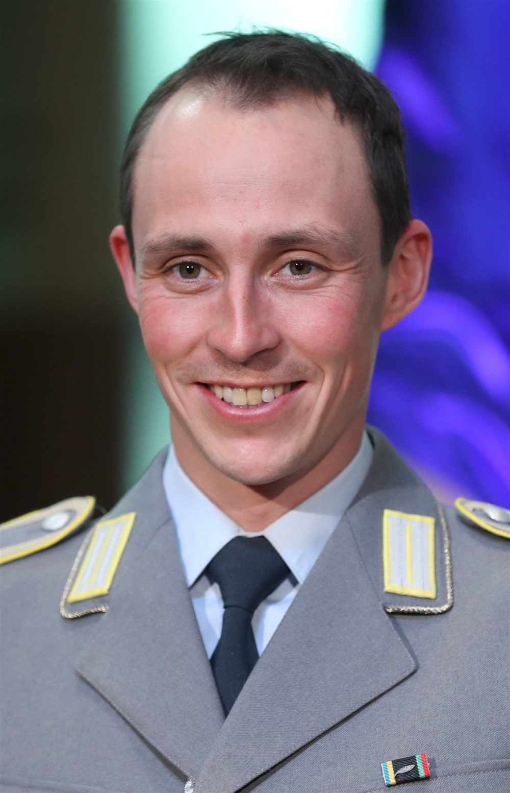
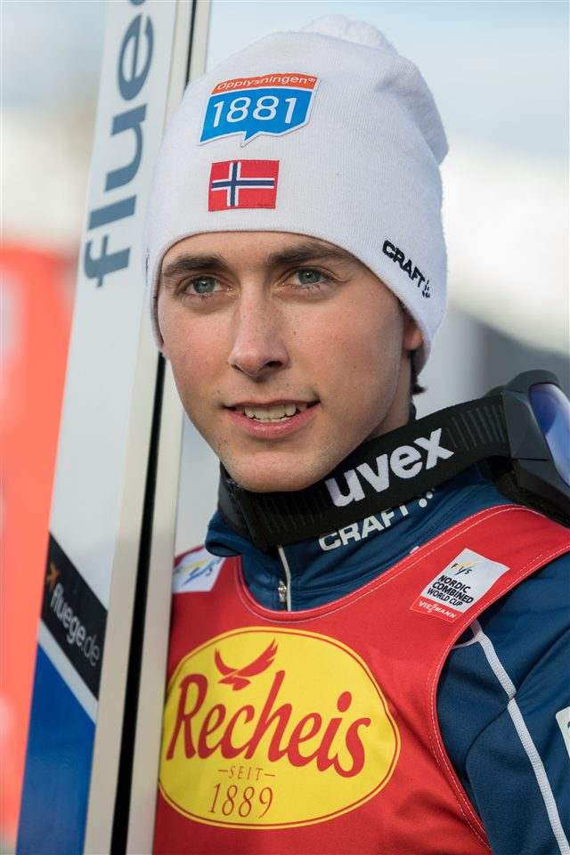
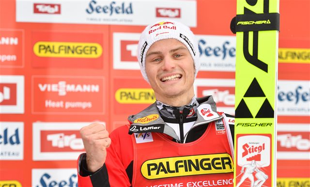
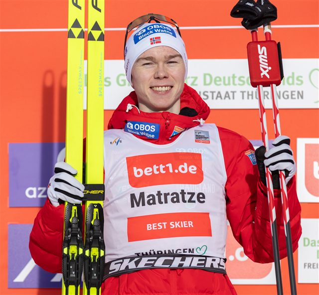
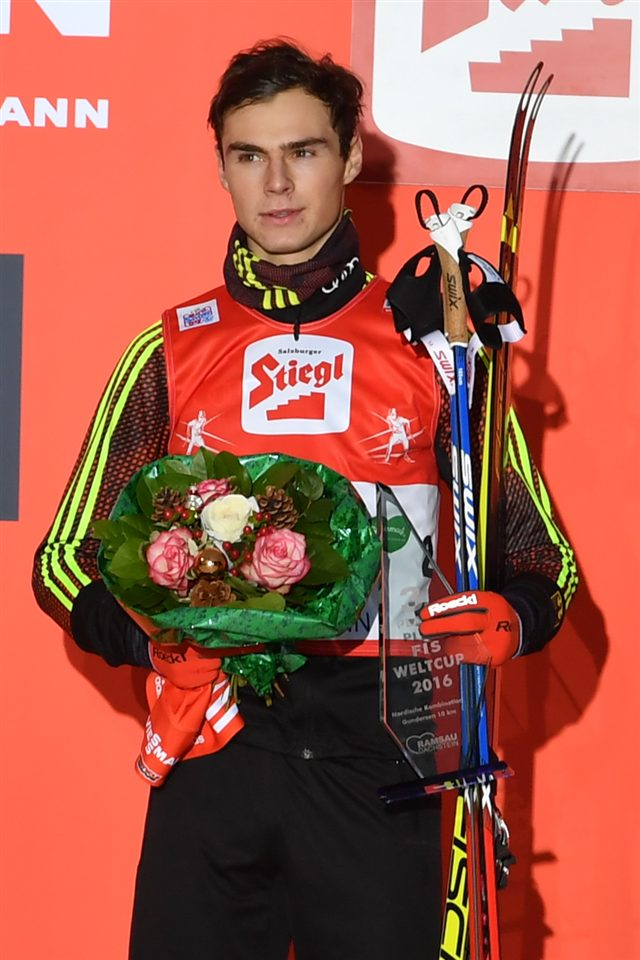
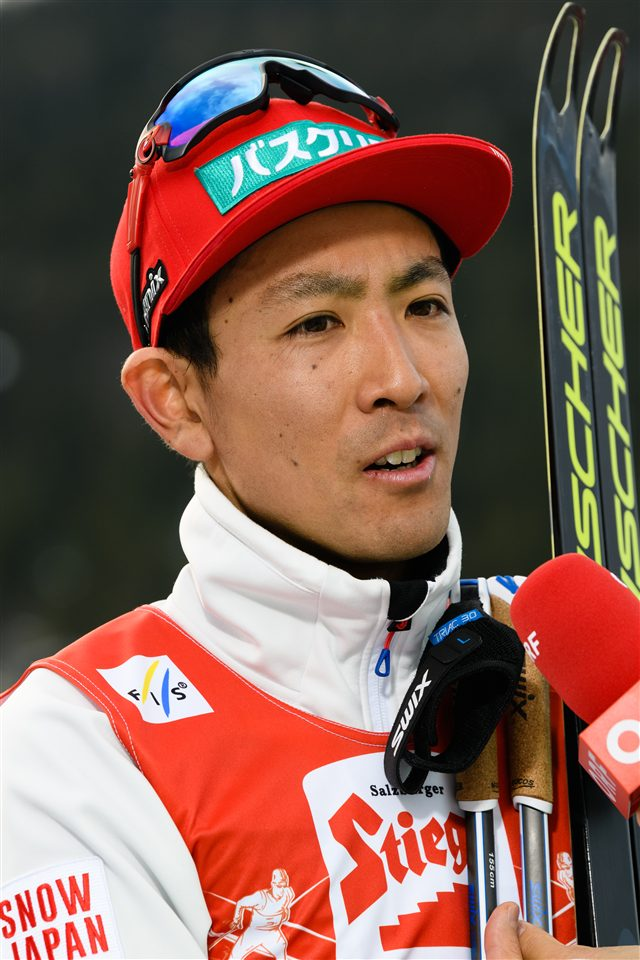

Le saut
Un saut compte : distance + style établissent le classement et les points de départ.

2 en 1
Disciplines combinées
10 km
La course de fond
140 m
Le grand tremplin (HS)
Le combiné nordique réunit dans une même journée les deux piliers du ski nordique : le saut à ski le matin, puis le ski de fond l'après-midi. C'est l'épreuve des athlètes les plus complets.
Tout repose sur la méthode Gundersen : le classement du saut détermine l'ordre et les écarts de départ de la course. Le vainqueur du saut s'élance le premier, les autres avec un retard proportionnel à leurs points. Le premier à franchir la ligne du 10 km gagne, tout simplement.
Le Norvégien Jarl Magnus Riiber écrase la discipline, dans la lignée du recordman olympique allemand Eric Frenzel.

Un saut compte : distance + style établissent le classement et les points de départ.
Chaque point d'avance au saut se convertit en secondes d'avance au départ de la course.
Les fondeurs partent en décalé : sur la piste, la position reflète directement le classement.
La course de fond se dispute en technique libre (skating), la plus rapide.
Premier sur la ligne, premier au classement : un final souvent décidé au sprint.
Quatre relayeurs par nation : sauts cumulés puis relais 4 × 5 km en poursuite.
Lieux
Saut à Predazzo · fond à Tesero — Val di Fiemme
Capacité
≈ 12 000 places (saut) · 10 000 (fond)
Accès
Navettes JO entre Predazzo et Tesero. Billet combiné saut + fond recommandé.
Billet
À partir de 45 € (journée complète saut + fond)
Température
Vallée de montagne — prévoir -6 °C, 1 000 m d'altitude

 Norvège
Norvège
 Autriche
Autriche
Norvège
 Allemagne
Allemagne
 Japon
Japon